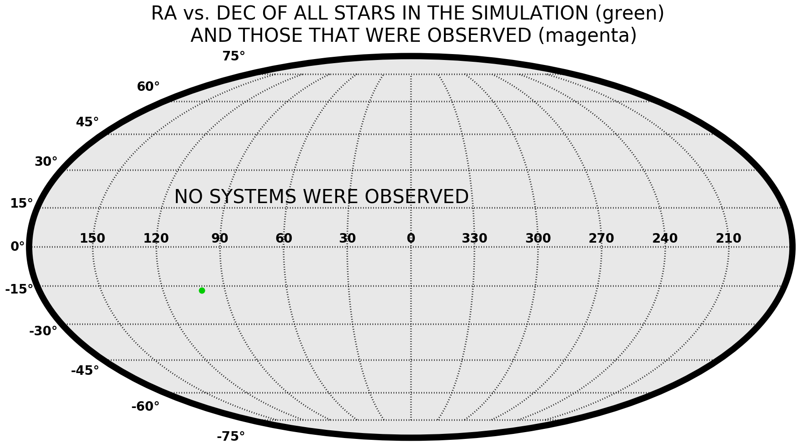
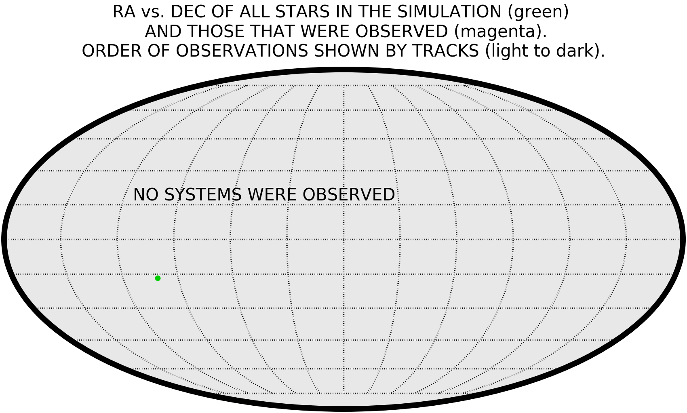
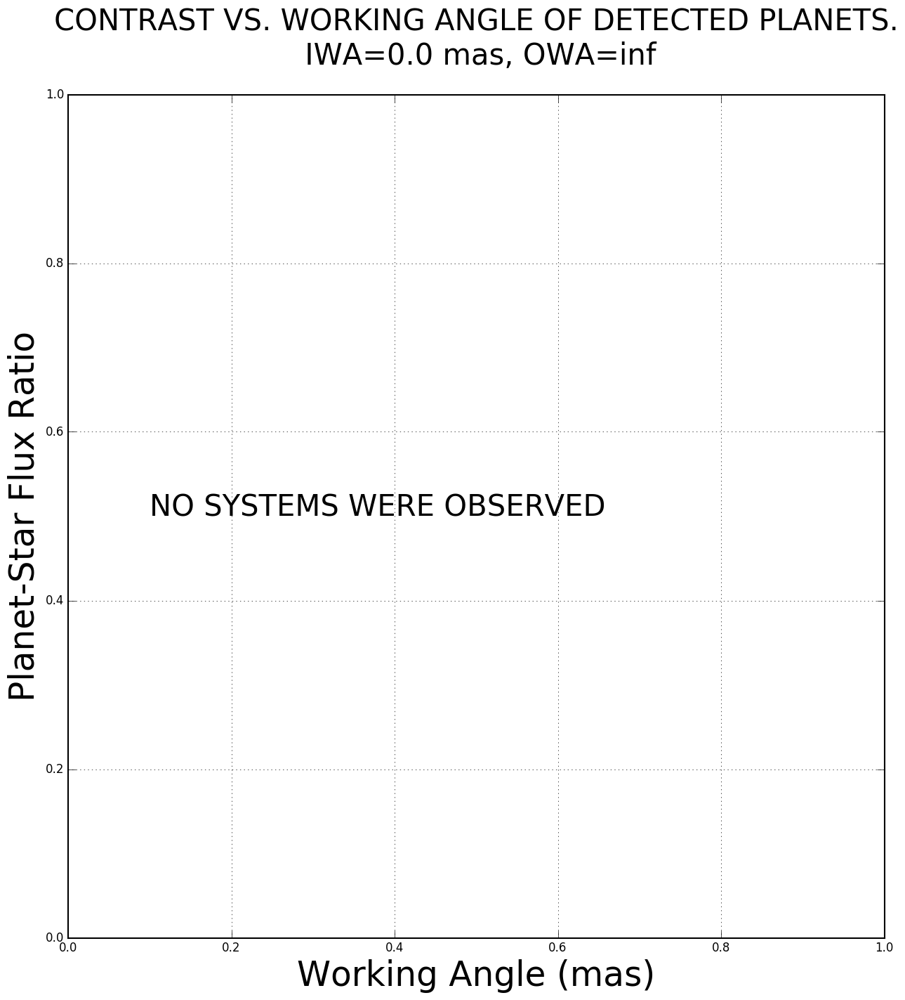

Exoplanet Open-Source Imaging Mission Simulator User Interface (EXOSIMS-UI) Results
Job Complete
Submit Time: |
Thu Jul 27 18:05:19 2017 (GMT) |
ID: |
lhbq |
| Start a new calculation | Modify this calculation | Download Full Results |
User Input Parameters
| missionLife: | 5.0 |
| missionPortion: | 0.3 |
| extendedLife: | 0.0 |
| missionStart: | 60676.0 |
| dMagLim: | 21 |
| settlingTime: | 0.02 |
| minComp: | 0.02 |
| telescopeKeepout: | 30.0 |
| intCutoff: | 30.0 |
| eta: | 0.1 |
| ppFact: | 0.3 |
| FAP: | 0.0000003 |
| MDP: | 0.001 |
| TargetType: | KeplerLike |
| Dlam: | 550.0 |
| DBW: | 0.1 |
| DSNR: | 5.0 |
| DohTime: | 0.1 |
| Clam: | 600 |
| CBW: | 0.1 |
| CSNR: | 5.0 |
| CohTime: | 0.1 |
Output (Help)

{kind=link}
This sky plot was created using a Mollweide projection. The plot shows the location in RA vs. DEC of stars used in the simulation (small green dots), as well as those stars which were observed at any point in the simulation (open magenta squares).

{kind=link}
This sky plot was created using a Mollweide projection. It shows the same targets that were included in the survey in Figure 1 (green points). This particular plot also includes the progression of the telescope pointing over the entire mission (magenta lines). The earliest observations are indicated by a more transparent line, while later and later observations are shown by darker and darker lines.

This plot shows a color magnitude diagram (Absolute V vs. B-V) of all the stars used in the simulation (green points), overlaid with the stars which were visited for observations during the allotted time (magenta open squares).

{kind=link}
This plot shows the flux contrast ratio of planets which were detected as a function of their angular separation from the central star.
/usr/local/anaconda2/lib/python2.7/site-packages/astropy/config/configuration.py:687: ConfigurationMissingWarning: Configuration defaults will be used due to OSError:Could not find unix home directory to search for astropy config dir on None
warn(ConfigurationMissingWarning(msg))
Unknown option: -C
usage: git [--version] [--exec-path[=GIT_EXEC_PATH]] [--html-path]
[-p|--paginate|--no-pager] [--no-replace-objects]
[--bare] [--git-dir=GIT_DIR] [--work-tree=GIT_WORK_TREE]
[--help] COMMAND [ARGS]
svn: '/var/www/wfirst-ops/html/sims/tools/EXOSIMS/EXOSIMS' is not a working copy
~~~~~~~~~~~~~~~~~~~~~~~~~~~~~~~~~~~~~~~~~~~~~~~~~~~~~~~~~~~~~~~~~~~~~
Simulation has begun
The following text will show you EXOSIMS specific variables as well
the sequence of observations.
Most error messages are harmless
~~~~~~~~~~~~~~~~~~~~~~~~~~~~~~~~~~~~~~~~~~~~~~~~~~~~~~~~~~~~~~~~~~~~~
MissionSim.pyc: Beginning logging to "logfile.txt" at level INFO
MissionSim: Seed is: 3354843
Imported SurveyEnsemble (prototype module) from EXOSIMS.Prototypes.SurveyEnsemble
Imported KeplerLikeUniverse (specific module) from EXOSIMS.SimulatedUniverse.KeplerLikeUniverse
Imported TargetList (prototype module) from EXOSIMS.Prototypes.TargetList
Imported EXOCAT1 (specific module) from EXOSIMS.StarCatalog.EXOCAT1
Imported Nemati (specific module) from EXOSIMS.OpticalSystem.Nemati
Imported Stark (specific module) from EXOSIMS.ZodiacalLight.Stark
Imported PostProcessing (prototype module) from EXOSIMS.Prototypes.PostProcessing
Imported GalaxiesFaintStars (specific module) from EXOSIMS.BackgroundSources.GalaxiesFaintStars
Imported GarrettCompleteness (specific module) from EXOSIMS.Completeness.GarrettCompleteness
Imported KeplerLike1 (specific module) from EXOSIMS.PlanetPopulation.KeplerLike1
Imported Forecaster (specific module) from EXOSIMS.PlanetPhysicalModel.Forecaster
Cached completeness file not found at "/var/www/wfirst-ops/html/sims/tools/EXOSIMS/EXOSIMS/Completeness/KeplerLike19adba16e553ed4095ab1c00f0f91c208.acomp".
Generating completeness.
Creating preliminary functions.
Generating pdf of orbital radius
Finished pdf of orbital radius
Generating pdf of albedo times planetary radius squared
Finished pdf of albedo times planetary radius squared
Marginalizing joint pdf of separation and dMag up to dMagLim
Finished marginalization
Completeness data stored in /var/www/wfirst-ops/html/sims/tools/EXOSIMS/EXOSIMS/Completeness/KeplerLike19adba16e553ed4095ab1c00f0f91c208.acomp
Beginning completeness update calculations
Completeness update calculations finished
Imported WFIRSTObservatoryL2 (specific module) from EXOSIMS.Observatory.WFIRSTObservatoryL2
Imported TimeKeeping (prototype module) from EXOSIMS.Prototypes.TimeKeeping
Imported SurveySimulation (prototype module) from EXOSIMS.Prototypes.SurveySimulation
Simulation finishing OK. Results stored in SurveySimulation.DRM
Not a valid Github or SVN revision.
NO
~~~~~~~~~~~~~~~~~~~~~~~~~~~~~~~~~~~~~~~~~~~~~~~~~~~
Simulation Complete.
NO STARS WERE OBSERVED.
~~~~~~~~~~~~~~~~~~~~~~~~~~~~~~~~~~~~~~~~~~~~~~~~~~~